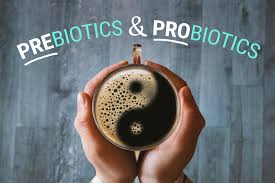

SynBio Organics Blogs
Synbio Organics
Synbiotics and Oxidative Stress: The Intersection of Health, Aging, and Chronic Diseases
Read More
and Oxidative Stress: The Intersection of Health, Aging, and Chronic Diseases
Read More

Organics: The Powerful Duo of Probiotics and Prebiotics
Read More
Synbiotics Explained
Treatment Therapy for H-Pylori: A 60-Day Guide
Read More
The Breakthrough Solution to H. pylori from Synbio Organics
Read More
Probiotics
Probiotics 828
Read More
the ancient roots of probiotics: from biblical references to modern science
Read More